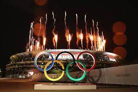
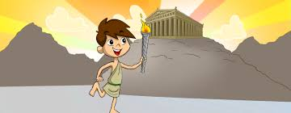

Origens Mitológicas: As Olimpíadas têm suas raízes na mitologia grega, ligadas aos deuses do Olimpo, como Zeus. Os jogos foram supostamente estabelecidos como um tributo a Zeus após sua vitória sobre seu pai Cronos.
Primeiros Jogos Olímpicos: Tradicionalmente, os primeiros Jogos Olímpicos foram realizados em 776 a.C. na cidade de Olímpia, na Grécia. Esses jogos ocorriam a cada quatro anos e incluíam competições atléticas e rituais religiosos.
Competições e Atletas: As competições incluíam corridas, lutas, pentatlo, corrida de carros puxados por cavalos e outros eventos físicos. Atletas gregos de várias cidades-estado competiam, e os vencedores eram considerados heróis.

Importância Cultural: Os Jogos Olímpicos antigos eram mais do que apenas competições esportivas; eram eventos culturais e religiosos importantes.
Com o tempo, as Olimpíadas antigas enfrentaram desafios, incluindo guerras e mudanças políticas. O imperador romano Teodósio I proibiu os Jogos Olímpicos em 393 d.C. como parte de seu decreto contra práticas pagãs.
